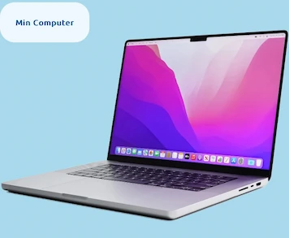

02 WEB
Min Computer
Dette forløb handlede om at kode en hjemmeside fra bunden med vejledning og hjælp fra undervisere. Der var i løbet af projektet sat klare rammer op for hvordan det endelige site skulle se ud. Dermed var det også vores studiestartsprøve som vi skulle bestå for at holde vores plads på studiet. løbet af dette tema lærte jeg blandt andet at arbejde struktureret og under pres, samt hvordan man tøjler at blive introduceret til et nyt sprog, og skulle stå med et færdigt produkt på kort tid
